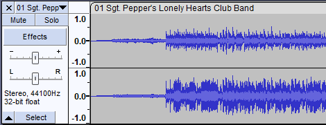
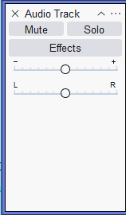
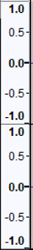
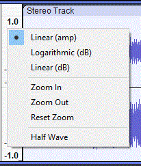
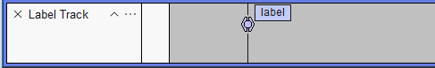
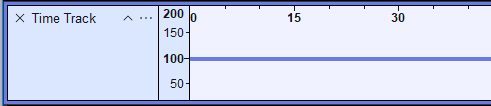

Track Control Panel and Vertical Scale
Contents
Audio Track (stereo or mono)
- 
Track Control Panel
 The Track Control Panel at the left of the audio track has controls and status indicators for this track. Left-clicking other than on a control performs track selection. Left-clicking other than on a control and dragging up and down rearranges the order of the tracks. The controls are as follows:- an button to delete the track
- a
 button to collapse or restore the height of the track
button to collapse or restore the height of the track - a dropdown menu, accessed by clicking on the track name or the little black triangle at the top right of the Track Control Panel, enabling you to edit or move the audio track.
- and buttons mute or solo the track. Solo button behavior can be change in Tracks Behaviors Preferences
- Reveals the real-time effects stack. For details see Using Realtime Effects on the Audacity Support GitBook.
- Gain/Volume slider for adjusting the volume of the track
- Pan slider to position the audio of this track in the stereo sound stage
For details please see this section of the Audio Tracks page.

How the buttons affect other tracks depends on your Solo button preference setting Vertical Scale
 The Vertical Scale displays amplitude when showing the waveform, or frequency when showing the spectrum or pitch. - The amplitude scale shown to left is the default linear scale, with 1.0 being the maximum value of positive signals and -1.0 the maximum of negative signals.
- Right-click in the Vertical Scale will bring up a dropdown context menu facilitating swapping between the following views:
- Linear (amp) - linear display with amplitude values (scaled 0 to 1.0)
- Waveform dB - logarithmic display
- Linear (dB) - linear display with dB values
The Vertical Scale can be used to control Vertical Zooming.
- Right-click in the Vertical Scale will bring up the dropdown context menu. For details see Simple mode vertical zooming.
Right-click in the Vertical Scale to get the context menu:
 The Vertical Scale (the vertical ruler to the left of the waveform can be used to control the vertical zoom level. Right-click in the Vertical Scale will bring up a dropdown context menu enabling: - Linear (amp) - the waveform is shown in linear view with amplitude values (scaled 0 to 1.0)
- Logarithmic (dB) - the waveform is shown in logarithmic view
- Linear (dB) - the waveform is shown in linear view with dB values
- Zoom In - zooms in vertically, centered on the middle of the waveform. It can be used repeatedly.
- Zoom Out - zooms out vertically, centered on the middle of the waveform. It can be used repeatedly.
- Reset Zoom - resets the waveform to normal vertical zoom level
- Half Wave - displays the top half of the waveform only, can be useful when working with many tracks
The Vertical Scale context menu is different in Spectrogram View.
Label Track
- 
A label track has an empty Vertical Scale Ruler.
It does have a dropdown menu, accessed by clicking on the track name or the little black triangle at the top right of the Track Control Panel, enabling you to edit or move the label track.
Please see this section of the Audio Tracks page for details.
Time Track
- 
The vertical Scale in Time Tracks can be set to either Linear Scale (default setting, as shown here) or Logarithmic Scale. This along with other settings for your Time track can be controlled from the dropdown menu accessed by clicking on the track name or the little black triangle at the top right of the Track Control Panel.
See this section of the Time Tracks page for more details.
Note Track
The Track Control Panel and Vertical Scale are rather different to all other tracks in Audacity:
- The Vertical Scale shows the pitch position of the displayed notes shown on a piano keyboard. As with the audio tracks you can zoom the scale of the Vertical Scale piano keyboard using your mouse.
- The Track Control panel shows the channels, color coded to tie in with the channels displayed, that are to be played and allows you to toggle individual channels by left-clicking or toggle all other channels off by right-clicking.
For more details please see Note Tracks.
Links
{kind=link}